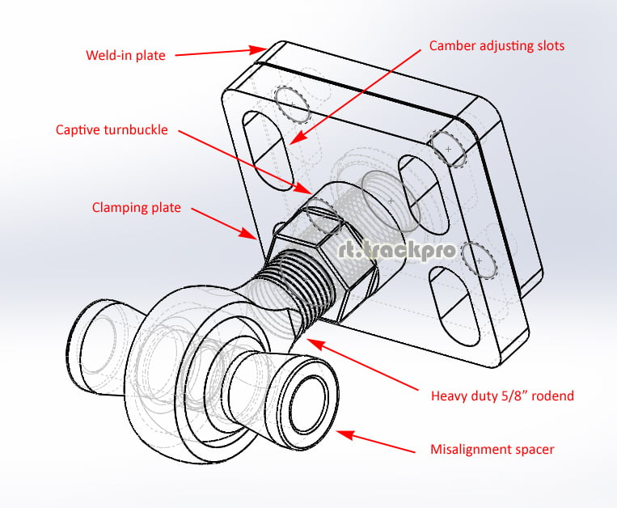

-
Crude paint drawing of what I am talking about. Can still use the captive turnbuckle for toe/length adjustments.
1986 300ZX Turbo…sold
1990 Skyline GT-R…new money pit
2014 Juke Nismo RS 6-speed…daily -
Not really sure what you're getting at, if both can move, you can split the difference between the pivots, so instead of all toe on the inboard and all camber on the outboard, you can do half and half…Originally posted by NissanEgg
The total adjustment range should be approximately triple what the eccentric bolts could do.
For manufacturing, it's cheaper to make more of the same, than fewer of different types, just fyi
-
GE,
Really great design idea. I really like the progression here. Point of concern or thought and problem I had when trying to add hiems to the control arms is there is no really good square/perpendicular area to subframe to fabricate off of. One would have to build a jig and rebuild part of the arms to ensure everything would be nice and square to the cross member mounting points. I thought about chopping off part of the arms, then rebuilding with tubes (but that became more of a hassle then it was worth for me at the time). You may have to do some experimenting on chopping part of the control arms off, and designing the weld on plate with some offset angle to accommodate.
(i circled in red the area of concern on the control arms)
Justin,
I like your suggestion, however when you (1) lower the z31 and (2) adjust toe using only 'one' arm there is caster change. Look at a lowered z31 and you will notice that the wheel sits further forward in the wheel well. You need both to be length adjustable to re-zero the caster.
Control Arm.jpg86na - BlueZ
Shiro #366 - Kouki Monster
85t - Mr Tickles -
I'm not sure I see the difficulty, since you can effectively mark a cutline for both arms at the same time, just keep it parallel to the bushing as a starting point, and mark the bushing centers perpendicular to that. I'd suggest a big rubber band might actually be the easiest way to mark it, then spray over it with white paint or something, for a silhouette line to follow on all surfaces… -
That's why I said you can still use the GE plates with turnbuckles on them to adjust length/toe. Basically the inboard arm will have a turnbuckle plate with a central pivot for camber, and the out board arms will have a turnbuckle plate with 4 slotted holes to adjust the camber and lock it in place. The turnbuckles would then be used to adjust the length of the arm for toe change, while keeping the heim joints for bind-free funtion.Originally posted by adamvann3
Basically this in its current form for the outer arms.

Then the same, but without slots but a central pivot hole for the inboard arm.
1986 300ZX Turbo…sold
1990 Skyline GT-R…new money pit
2014 Juke Nismo RS 6-speed…daily -
Im just saying, after you cut the ends off on the arms there isnt really a nice to place weld on. Depending on how far you cut down as well the arms curve (especially the inner) not giving a probable mount location in realitive of where it has to mount to the subframe and not giving enough room for the heim joint shaft.Originally posted by G-E
These are the issues I ran into when trying to use my monster baseball sized jonny joints. Im not disproving or saying your idea is shit here. Just trying to give some insight to issues I had. I think cutting a control arm with some prototypes is going to be key here. The weld on portions to the arm may have to be offset depending. I have faith you can reach a solution.
Originally posted by NissanEgg
Just re-read your post. Was slammed at work and just focused on the pretty pictures and not the actual explanation you gave. Valid points.86na - BlueZ
Shiro #366 - Kouki Monster
85t - Mr Tickles -
I understand, which is why the weld-on plate is the simplest piece in the whole kit, it's just a plate with 4 holes for M10 studs, in fact that's the part anyone could make themselves; or a person could just add gussets of some kind to whatever it's final position is, the plate won't need to be accessed from the rearOriginally posted by adamvann3
Anyway the plan is to offer these for any trailing arm based vehicle, E30, AE86 whatever, it's a universal item, and I'll have a couple of sizes of misalignment spacer, but there's always the off-the-shelf spacers, or they can be made to order -- in most cases doing rodend conversions won't need misalignment spacers, as the rodends will never be asked to tilt more than 5 degrees, straight spacers would work just fine, I am just thinking beyond that
-
Look at the arm. They are no where near straight where they are connected to the busing area. Depending on how far back they will need to be cut there could be possible issues with aligning the heim to the subframe (the heim would not longer be on center).
You will also need clearance for the shaft of the heim depending on length that is sticking out.
I understand you want to make this universal, and I really like this concept but I would create a couple to see what I am expressing. I had these issues when trying to add heims to the control arms when ever I started this project. What I found would work best is leaving part of the back of the bushing housing to use for reference and keep things square. Its just a matter of how far back the arms need to be cut.86na - BlueZ
Shiro #366 - Kouki Monster
85t - Mr Tickles -
Again, this is all stuff that's largely irrelevant, the control arm segments could be the shape of peanuts, it wouldn't change anything. You need to make a cut, mockup, then weld, then weld some more. It's like the work involved in re-boxing the frame sections after doing a subframe swap, no one does a writeup on that, because that's not the important part.
Like I said, using a rubber band is probably the easiest way to mark the cuts, everything can be laid out and measured off the car, both sides can be made equal without a jig. Also like the subframe swap, you can embellish the process your way, there's no hard and fast rule how to do it.
If you want to mount the two plates to adjust in an arcing motion instead of up and down, that's fine too; you might lose some range, but there should be enough tolerance in the clamping plate to do it (one of the key areas I had to solve)… -
So when I cut the the control arms, lets say 2 inches back weld in your adjustable plates, then go to bolt them to my subframe and the heims are no longer centered in the mounts and moved 1" total inboard I wouldn't be pissed? Because this is largely irrelevant?Originally posted by G-E
Since none of the arms profile is not straight its hard to use any surface as a datum or guide. I am not sure how many rear alignments you have done on your z31, but 1/4" segments equates to a lot adjustment, Not being square, or somewhat precise on both sides could lead to some large variation overall.
On the s13 swap, cutting the frame and boxing is to allow for the raised pick-up points. This has nothing to do with the dynamics or alignment of the suspension of the suspension other than clearance......................................... .........................
With the s13 subframe you can use the z31 differential mounting points for to position the new rear pins. You can bolt in the rear subframe and tack weld the front mounting points using the z31 pins.... Thus keeping everything square with no issues. I dont think using a rubber band is going to have the same effects.Originally posted by G-E
I can not deny you have a great ability to come up with some unique solutions to issues. However it is largely shadowed by your inability to understand all the risks in application and lack of verification testing.
Your continued negligence to advice from someone who has attempted similar applications is overwhelming. I can see my experience and insight is not needed here, I am done. I will look forward to seeing sales and peoples feedback once trying to install.86na - BlueZ
Shiro #366 - Kouki Monster
85t - Mr Tickles -
I understand the risks of doing it wrong, what I don't understand is why you have so little confidence in measuring devices?
Consider shamwow's subframe swap kit, he included that long flat bar to keep the pins equidistant, why could you not do the same here? How hard is it to cut a strip of metal or wood, add 2 holes at each end to hold the weld-in plates at the correct position?
You literally only need 3 points of measurement per arm to make the cuts, and once marked with reference locations on the remaining section, installing the plates is just about verifying position… AND it can all be done sitting next to the subframe itself.
I'm perfectly aware some people need hand holding, I can always offer extra plates for boxing it in or even just aligning it, but again, that doesn't change the core adjuster hardware I'm talking about here, which is why i'm not talking about it.
People can build pyramids with water, string, sand and wood, remember that… -
I should have everything in to make this happen first week april… I will show you how to measure and cut easily
-
Yall are getting close. Finish it up so you can take my money!Elitist Prick Black Z owner.
1986 300zx Turbo
2011 Ford F150 Super Crew 4x2 EcoBOOST
1985 Toyota 4Runner, locked, lifted, geared, uglied.

-
-
Hmm what's going on here?
DSCF0098.jpg

Copyright © 2006–. All rights reserved. Privacy Policy